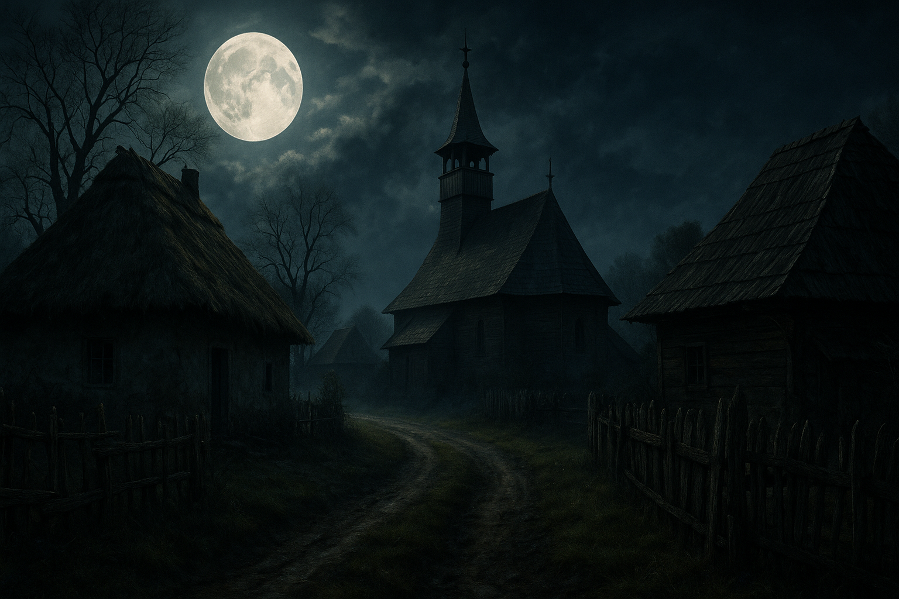

Strigoii – Misterul Umbrelor Vii în Tradiția Românească

Introducere
În imaginarul popular românesc, puține ființe au stârnit de-a lungul timpului mai multă teamă, neliniște și fascinație decât strigoii. Pentru oamenii de la sate, ei nu erau doar personaje de poveste, ci explicații pentru boli misterioase, morți neașteptate, nenorociri repetate sau vise tulburătoare. În nopțile lungi de iarnă, la focul sobei, bătrânii povesteau despre umbrele care se întorc, despre suflete rătăcitoare ce nu-și găsesc liniștea și despre strigoii care bântuie lumea celor vii.
Strigoii nu apar doar ca monștri înspăimântători, ci ca figuri complexe, încărcate de simboluri, frici și întrebări existențiale. De fapt, legenda lor ne vorbește despre frica de moarte, de necunoscut și, mai ales, despre teama că anumite lucruri nu se termină niciodată cu adevărat. Misterul strigoilor este, în esență, misterul graniței dintre viață și moarte.
Originea credințelor despre strigoi
Rădăcinile credințelor despre strigoi se pierd în timpuri străvechi, probabil încă de pe vremea dacilor și a cultelor lor legate de viața de apoi. În tradiția românească, lumea nu este împărțită rigid între „aici” și „dincolo”, ci între acestea există o zonă intermediară, un spațiu în care sufletele neliniștite pot rătăci.
Strigoii apar în această zonă de graniță. Ei sunt, în unele povești, sufletele celor morți care nu și-au găsit liniștea din cauza unei nedreptăți, a unui păcat grav, a unor ritualuri de înmormântare neîndeplinite sau din pricina unor legături prea puternice cu lumea celor vii. În alte variante, strigoiul este un „mort viu”, capabil să iasă din mormânt, să se hrănească din energia sau sângele celor dragi și să aducă nenorociri comunității.
Cu timpul, mitul strigoilor s-a îmbogățit cu influențe slave, balcanice și apoi occidentale, împletindu-se parțial cu imaginea vampirului, dar păstrând în același timp trăsături distincte, specifice spațiului românesc.
Tipuri de strigoi în folclorul românesc
Deși în limbajul de zi cu zi vorbim simplu despre „strigoi”, în credințele populare ei sunt împărțiți în mai multe categorii, fiecare cu trăsăturile și „specializarea” sa.
- Strigoiul viu – este omul care, încă din timpul vieții, are ceva „nefiresc” în el. Poate fi un copil născut cu semne stranii, cineva cu două spirite, o persoană răutăcioasă sau invidioasă despre care se spune că noaptea își părăsește trupul și umblă să facă rău.
- Strigoiul mort – sufletul celui care, după moarte, nu găsește odihnă. Se întoarce să bântuie familia, satul sau locul în care a trăit, provocând boală, frică și tulburare.
- Moroiul – în unele zone este sinonim cu strigoiul, în altele este o formă „mai slabă”, un fel de spirit rătăcit, mai mult tulburător decât periculos.
- Pricoliciul – o variantă de strigoi care se poate transforma în animal, de obicei lup. El este asociat cu nopțile cu lună plină și cu strigătele prelungi ale câinilor.
Această clasificare arată cât de bogată și nuanțată este imaginația populară. Strigoii nu sunt doar „monștri de basm”, ci figuri complexe care reflectă frici, suspiciuni și tensiuni din viața comunităților rurale.
Cum „devine” cineva strigoi?
O întrebare esențială în tradiția românească este: de ce unii morți se transformă în strigoi, iar alții nu? Răspunsurile sunt multe și diferă de la o regiune la alta, dar există câteva credințe comune.
Se spune că pot deveni strigoi:
- cei care au murit tineri sau „cu zile”, în mod neașteptat;
- cei care au fost foarte răi, invidioși sau cruzi în timpul vieții;
- cei care nu au fost înmormântați după datină;
- cei care nu au primit iertarea sau împăcarea cu familia înainte de moarte;
- cei care au făcut jurăminte neîmplinite sau au lăsat treburi „deschise” în lume.
În unele sate, se credea că anumite semne fizice prevestesc posibilitatea ca un om să devină strigoi după moarte: o coadă mică, dinți neobișnuiți, un anumit semn pe piele sau faptul că se născuse în anumite zile „cu ghinion”.
Semnele strigoilor – cum își dădea seama satul
O comunitate rurală, atentă la orice detaliu, era convinsă că strigoii își lasă urme. Când într-o familie începeau să apară boli inexplicabile, copii slăbiți fără motiv, animale neliniștite sau vise urâte repetate, bătrânii satului începeau să vorbească despre „umblatul strigoilor”.
Printre semnele considerate „sigur de strigoi” se numărau:
- coșmaruri repetate – în care mortul apărea și cerea ceva, plângea sau chema pe cineva la el;
- sunete în noapte – bătăi în geam, zgomote în pod, pași pe lângă casă fără explicație;
- animale agitate – câinii lătrau neliniștiți spre un loc gol, găinile se speriau brusc noaptea;
- ofilairea bruscă a unor plante – mai ales a celor considerate protectoare, precum busuiocul;
- slăbirea inexplicabilă a unui membru al familiei, de multe ori pusă pe seama „sugerei de vlaga” de către strigoi.
Toate aceste semne, privite astăzi cu curiozitate, aveau odinioară o greutate enormă. Din ele se construia diagnosticul „popular”: în sat e un strigoi.
Ritualurile de protecție
Odată identificată prezența unui strigoi, comunitatea nu rămânea pasivă. De-a lungul timpului, românii au dezvoltat un întreg arsenal de ritualuri și gesturi menite să țină la distanță aceste ființe nevăzute.
Printre cele mai cunoscute mijloace de apărare se numără:
- usturoiul – uns pe ferestre, uși, coșul sobei, uneori chiar pe fruntea sau palmele copiilor, mai ales în nopțile considerate periculoase;
- busuiocul și aghiasma – stropirea colțurilor casei, a grajdului și a ogrăzii;
- crucea – fie sculptată în lemn, fie desenată cu cretă sau cărbune pe ușă;
- lumânările aprinse – lăsate să ardă în nopțile de sărbătoare, pentru a lumina drumul sufletelor și a alunga umbrele neprietenoase.
Uneori, femeile bătrâne din sat rosteau și rugăciuni speciale, transmise din generație în generație, pentru „liniștirea” celor care nu își găsiseră pacea.
Ritualuri radicale – când frica ajungea la extrem
În cazurile în care se credea că strigoiul este extrem de puternic, comunitatea recurgea la ritualuri dure, despre care astăzi vorbim mai degrabă ca despre mărturii istorice decât ca despre practici reale. Sunt descrise situații în care mormântul era deschis, corpul mortului era verificat, iar dacă se găseau „semne” – lipsa descompunerii, sânge la gură sau alte particularități – se spune că se făceau gesturi menite să „oprească” strigoiul.
Aceste ritualuri, indiferent cât de șocante ni se par acum, trebuie înțelese în contextul epocii: oamenii nu aveau explicații medicale sau științifice pentru multe fenomene, iar teama și nevoia de control i-au împins către astfel de soluții extreme.
Strigoii și rolul lor în comunitate
Dincolo de senzațional și de frică, credința în strigoi avea și un rol de reglare socială. Persoanele considerate „altfel” – prea tăcute, prea izolate, conflictuale, invidioase sau cu anumite trăsături fizice – puteau deveni ținte ale suspiciunii. Așa se explica, într-un mod simbolic, de ce anumite familii „nu au noroc” sau de ce într-o casă se petrec nenorociri.
Pe de altă parte, comunitatea avea și mijloace de împăcare: prin ritualuri, pomeni, rugăciuni și gesturi de solidaritate, oamenii încercau să repare, simbolic, ceea ce considerau a fi „ruptura” dintre lumea celor vii și lumea celor morți.
Strigoii în literatură și cultura modernă
În literatura română, strigoii apar fie ca personaje de basm, fie ca simboluri mai profunde ale unei frici colective. Scriitori, etnografi și istorici ai culturii au cules de-a lungul timpului povești despre apariții nocturne, sate bântuite și ritualuri practicate pe ascuns.
În cultura modernă, strigoiul a fost uneori eclipsat de figura vampirului, mai ales după succesul internațional al mitului lui Dracula. Totuși, strigoiul rămâne diferit: el este mai legat de sat, de familie, de mormântul concret din cimitirul de lângă biserică. Nu locuiește neapărat într-un castel, ci într-o poveste spusă la șezătoare, într-o teamă moștenită și într-o amintire colectivă.
Interpretări moderne – psihologie și simbolism
Privite cu ochii de astăzi, legendele despre strigoi pot fi interpretate și dintr-o perspectivă psihologică sau simbolică. Strigoiul poate fi văzut ca o personificare a vinovăției, a doliului neîncheiat, a traumelor nespuse care continuă să „bântuie” familiile din generație în generație.
De asemenea, strigoiul poate simboliza tot ceea ce refuzăm să acceptăm: greșeli, nedreptăți, cuvinte nerostite. Atâta timp cât nu sunt asumate sau vindecate, ele „se întorc” în vise, în frici, în povești – asemenea unui strigoi care nu vrea să plece.
Concluzie – Misterul care nu dispare
Misterul strigoilor în tradiția românească nu stă doar în poveștile cu morminte și umbre, ci în felul în care aceste legende ne arată relația noastră cu moartea, cu memoria și cu cei care nu mai sunt printre noi. Pentru strămoșii noștri, strigoii erau o realitate explicativă; pentru noi, ei rămân un simbol al fricilor vechi, al întrebărilor fără răspuns și al fascinației pentru granița invizibilă dintre lumi.
Fie că îi privim ca simple personaje de legendă sau ca oglindiri ale inconștientului coletiv, strigoii rămân o parte esențială din patrimoniul nostru spiritual. Ei ne amintesc că, dincolo de rațiune, oamenii au avut întotdeauna nevoie de povești pentru a-și explica necunoscutul. Iar unele dintre aceste povești, precum cele despre strigoi, sunt atât de puternice încât nu se sting niciodată.